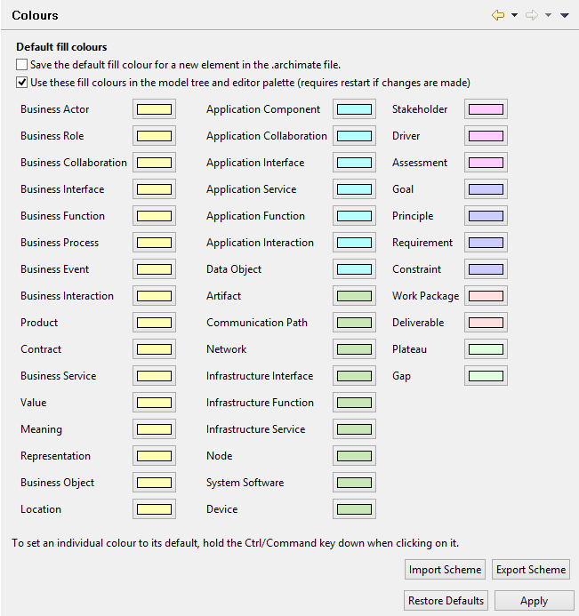

Colours Preferences
Choose the default fill colours to use for ArchiMate elements. These are the colours that will be displayed when the fill colour is set to "Default" in the Properties window for a diagram element. The default fill colours can be set differently for each installation of Archi so, for example, one user can have a completely different set of default fill colours than another user. The colours will not be saved in the .archimate model file unless the option to "Save the default fill colour for a new element in the .archimate file" is ticked.
Save the default fill colour for a new element in the .archimate file
If this is checked a diagram element's default fill colour is saved in the .archimate file and will then be "fixed" in the file. This ensures that if the file is shared the recipient will see these colours.